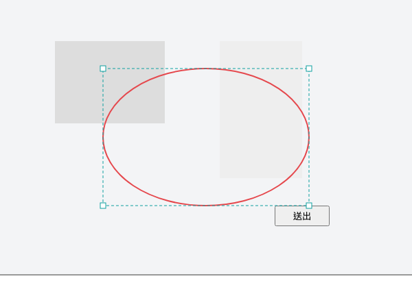
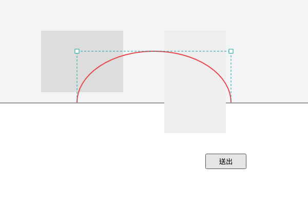

單一參考軸（x、y 都吃寬）。畫一個 300×200 橢圓，把畫布高 400→200 砍半，證明標注不縮放、不變形。


| 測試套件 | 結果 | 備註 |
|---|---|---|
| draw-layer.unit.spec.js | 191 / 0 | 含 imageGeom 改吃寬（4 個斷言更新） |
| draw-layer.spec.js（e2e） | 139 / 0 | 新增「視窗高度改變→不縮放」測試 + 3 個 hit-test helper 修為單一參考軸 |
| e2e-mock.spec.js | 9 / 0 | — |
| e2e-comments.spec.js | 34 / 0 | — |
| draw-overlay.cdn.spec.js | 1 / 0 | — |
| visual-shot.js | identical | 0 px 差異（留言 pin 樣式未動） |
改動：src/draw-layer.js 新增 coordRect() 方形參考 rect（取代 9 處 rect 建構）、getRectPct y 軸吃寬、imageGeom px→% 改吃寬 + 真實畫布中心置中。代價：非正方畫布上舊存標注的垂直位置語意改變（已知並接受的相容性取捨）。尚未 commit / build bundle，等你確認。